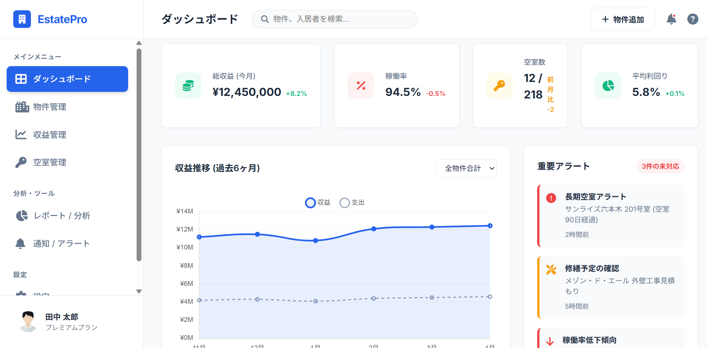

概要
不動産管理SaaSのUIデザインプロジェクトです。情報量が多い画面においても、ユーザーが直感的に操作できるよう余白と色使いを整理しました。
課題と解決策
不動産オーナーは複数の物件を保有することが多く、管理業務や収支把握に「情報の分散」「判断の遅れ」「空室リスクの見逃し」といった課題がありました。
そこで、
ダッシュボードを中心とした情報設計により、
収益・稼働率・リスクを一画面で把握できるようになり、
意思決定までの時間を大幅に短縮できるようになりました。
また、空室や収益低下を視覚的に把握できるUI設計により、
対応スピードの向上と空室率の改善に貢献できるようになりました。
その結果、管理工数の削減、収益性の向上、運用効率の最適化を実現することができました。